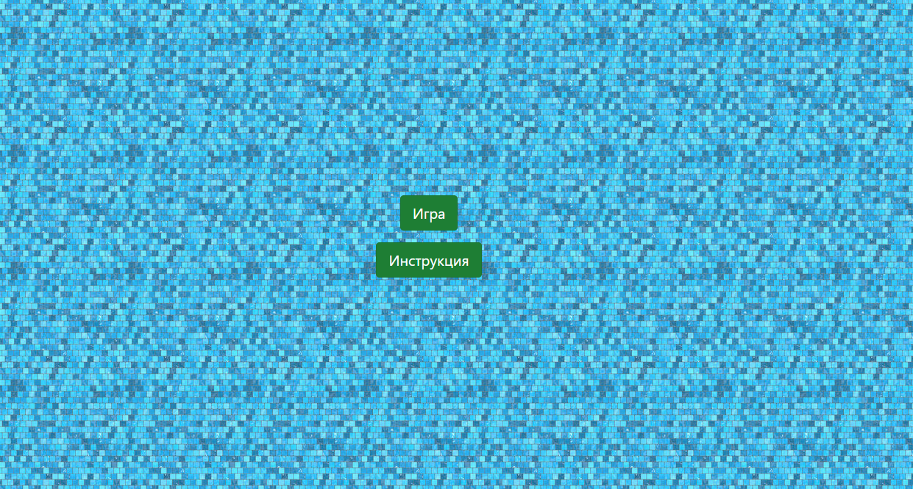

Игра "Водопроводчик"
Суть игры заключается в постройке трубопровода от одного края игрового поля на время. Играет один игрок. Компьютер предлагает очередной узел трубопровода, игрок может присоединить его к концу трубопровода. В определенный момент времени с начала игры, в трубопровод начинает подаваться вода, трубопровод. Если трубопровод будет заполнен до того, как игрок закончит строительство — игрок проиграл.
Главное меню:
За каждое действие начисляются баллы. За одно нажатие клавиши начисляют 15 очков. Так же каждую секунду начисляют 5 баллов. Так что нужно как можно быстрее собрать водопровод. Он начинавется слева-сверху и заканчивается внизу-справа. На постройку водопровода дают 35 секунд.
Игровой процес:
Таким образом, задача игрока набрать минимально коллличство баллов.
Работу выполнил:
Гришин Сергей, 4631.